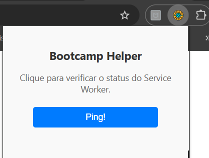

Funcionalidade Principal
Teste de Comunicação "Ping"
A principal função desta extensão é demonstrar a comunicação essencial entre a interface do usuário (o popup) e o processo de background (o Service Worker).
Ao clicar no botão "Ping!", o popup envia uma mensagem para o Service Worker, que responde confirmando que está ativo e funcionando. Isso é crucial para depurar e garantir que sua extensão está operante.
- Tecnologia: Demonstra o uso de
chrome.runtime.sendMessage. - Utilidade: Serve como um "health check" para o coração da sua extensão.
- Objetivo: Perfeito para desenvolvedores que estão aprendendo os fundamentos do Manifest V3.

Como Instalar
- Faça o download do arquivo
.zipclicando no botão no topo da página. - Descompacte o arquivo em uma pasta permanente no seu computador.
- Abra o Google Chrome e navegue para
chrome://extensions. - No canto superior direito, ative o "Modo de desenvolvedor".
- Clique no botão "Carregar sem compactação" que apareceu.
- Selecione a pasta que você descompactou no passo 2.
- Pronto! O ícone da "Bootcamp Helper" deve aparecer na sua barra de extensões.